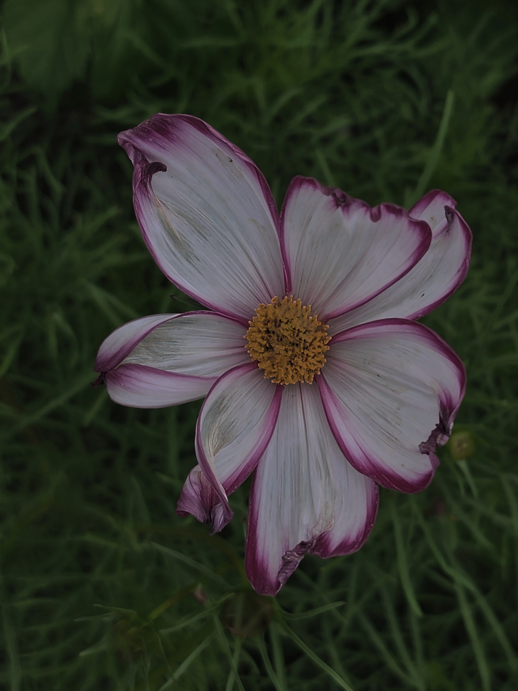
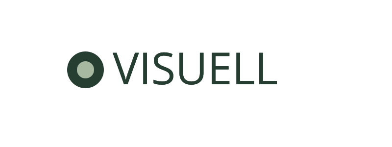
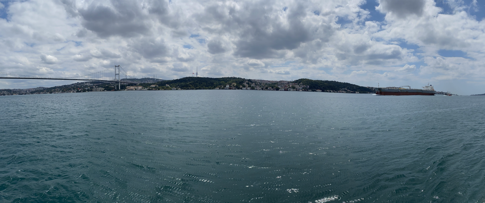
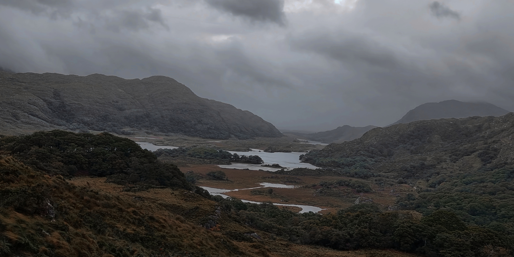

Blomma
Insekten har retuscherats bort och bildens ljus, kontrast och färger har justerats.
Se före och efter

Portfolio i bildbehandling
Här visar jag bilder som jag har redigerat i Photopea.
Se mina bilderPå den här webbplatsen visar jag mina redigerade fotografier och beskriver mitt arbete med bildbehandling.
Läs mer om migHär visas tre bilder som har redigerats i Photopea. På Bildredigering-sidan går det att jämföra varje resultat med originalbilden.

Insekten har retuscherats bort och bildens ljus, kontrast och färger har justerats.
Se före och efter
Det lila ögat har färgkorrigerats och bilden har fått en ljusare, tydligare ton.
Se före och efter
Ljusstyrka, kontrast och färgtoner har justerats för att framhäva landskapets detaljer.
Se före och efterI den här laborationen har jag arbetat med bildretusch, färgjustering, kontrast, storleksanpassning, beskärning och friläggning i Photopea. Målet har varit att förbättra bilderna och samtidigt anpassa dem för användning på en responsiv webbplats.
I originalbilden syns en insekt i blommans mitt. Den retuscherades bort så att blomman blir bildens tydliga fokus. Jag justerade även bildens ljusstyrka, kontrast och färgstyrka för att göra blomman och den gröna bakgrunden tydligare. Slutligen minskades bilden från 3000 x 4000 pixlar till 1500 x 2000 pixlar för webben.
I originalbilden har katten ett lila öga. Ögats färg återställdes till en mer naturlig färg så att resultatet ser trovärdigt ut. Bilden fick också högre ljusstyrka, tydligare kontrast och något starkare färger. Därefter minskades den från 3000 x 4000 pixlar till 1125 x 1500 pixlar.
Landskapsbilden justerades med högre ljusstyrka och kontrast för att göra detaljer i berg, vatten och moln tydligare. Färgerna förstärktes också något för att skapa ett mer levande resultat utan att förlora den dramatiska stämningen. Bildens proportioner behölls, men storleken minskades från 3544 x 1772 pixlar till 2000 x 1000 pixlar.
Originalfotot av havet och bron var mycket större än vad webbplatsen behöver. Bilden beskars till ett bredare panoramaformat så att den fungerar som en hero-bild på startsidan. Den minskades sedan från 8215 x 3628 pixlar till 1920 x 807 pixlar. Det ger en snabbare sida samtidigt som headerbilden fortfarande är skarp på större skärmar.
Porträttet frilades med en lagermask för att ta bort den ursprungliga bakgrunden utan att förstöra originalbilden. Kanterna runt hår och jacka justerades noggrant så att porträttet smälter in bättre på sidan. Bilden exporterades som PNG med transparens och fick bredden 1200 pixlar. Därför kan porträttet placeras direkt på Om mig-sidans bakgrund.